← Volver al inicio
 Estación de impresión 3D: resina y filamento
Estación de impresión 3D: resina y filamento Impresora de resina Phrozen Sonic Mini 4K
Impresora de resina Phrozen Sonic Mini 4K Anillo impreso en resina, aún con los soportes
Anillo impreso en resina, aún con los soportes Superficie impresa en 3D sobre sus planos con cotas
Superficie impresa en 3D sobre sus planos con cotas Engranajes impresos en distintos colores y acabados
Engranajes impresos en distintos colores y acabados Prototipo impreso en 3D (rojo) junto a la pieza original (negra)
Prototipo impreso en 3D (rojo) junto a la pieza original (negra) Pieza en metal junto a su prototipo impreso en 3D
Pieza en metal junto a su prototipo impreso en 3D Fresado CNC de un jarrón en poliestireno
Fresado CNC de un jarrón en poliestireno
Prototipado
Del modelo 3D a la pieza física
Impresión 3D en resina y filamento, fresado CNC y prototipos funcionales. Toca una foto para ampliarla.
Impresión 3D en resina y filamento
Estación de impresión 3D: resina y filamento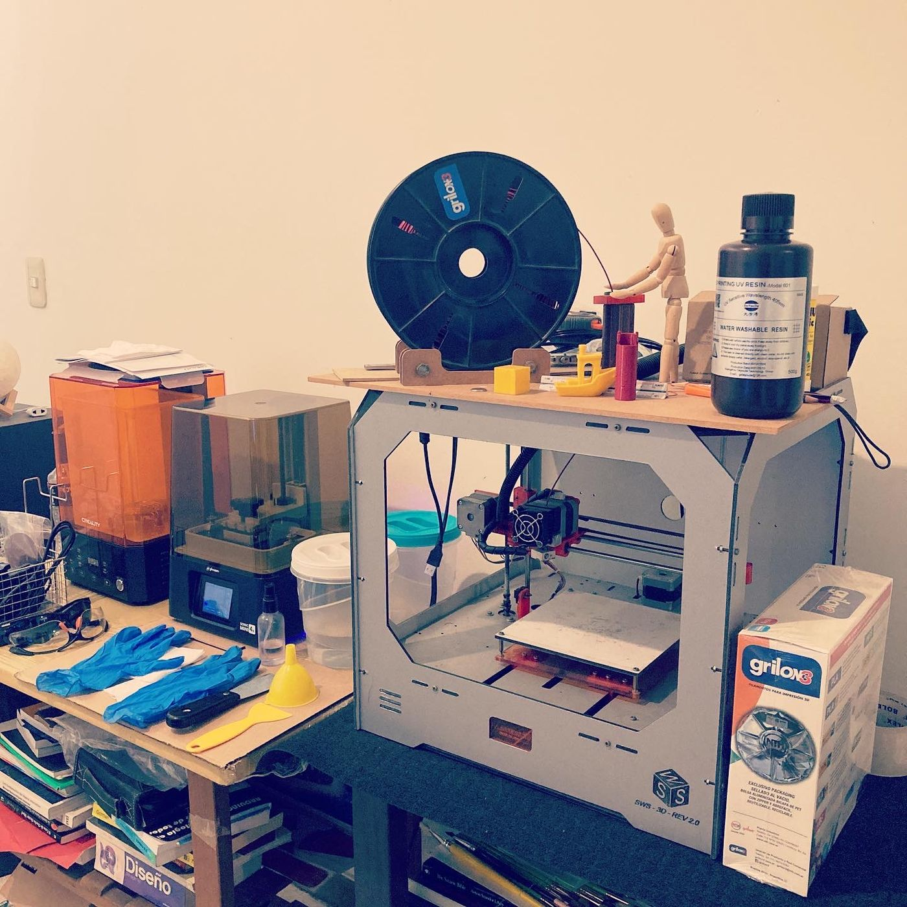
Impresoras 3D de filamento y de resinaImpresora de resina Phrozen Sonic Mini 4K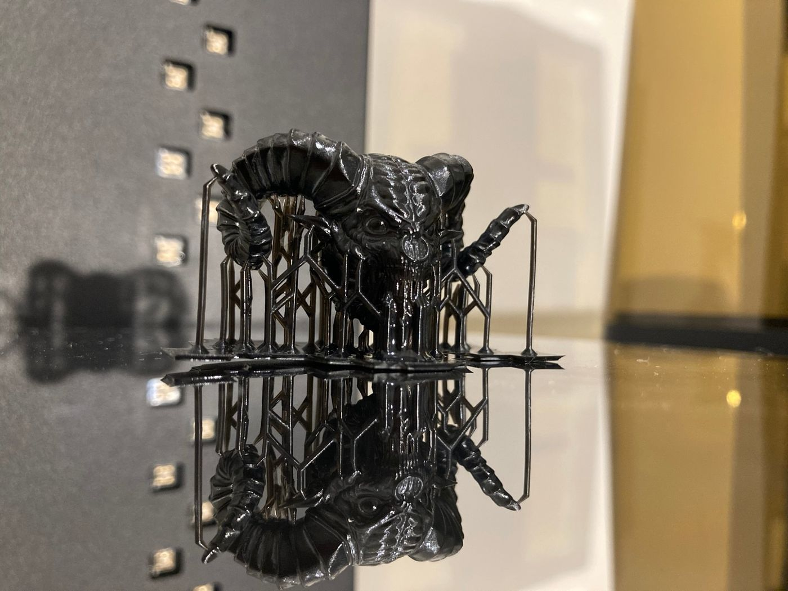
Impresión en resina con soportesAnillo impreso en resina, aún con los soportesSuperficie impresa en 3D sobre sus planos con cotasImpresión 3D en resina
Impresión 3D en resina · piezas en la plataforma
Estación de curado de resina
Piezas funcionales y repuestos
Engranajes impresos en distintos colores y acabados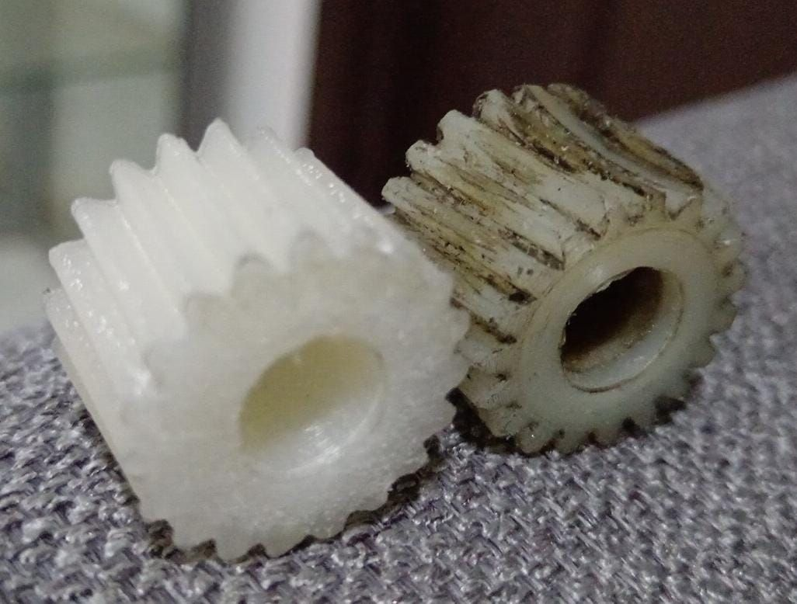
Engranaje impreso junto a uno desgastado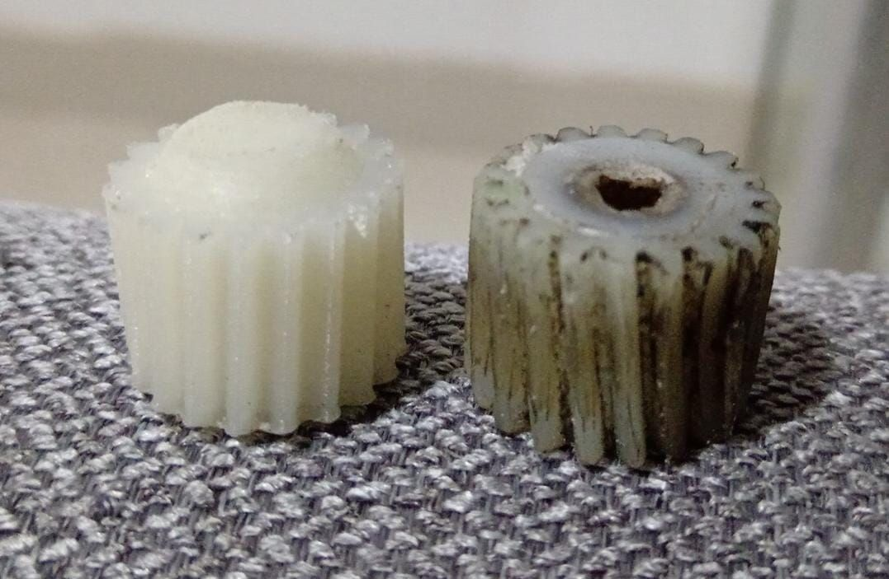
Engranaje impreso junto a uno desgastadoPrototipo impreso en 3D (rojo) junto a la pieza original (negra)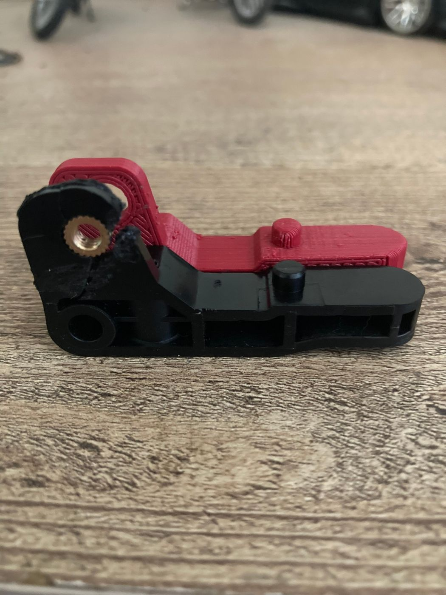
Prototipo impreso en 3D (rojo) junto a la pieza original (negra)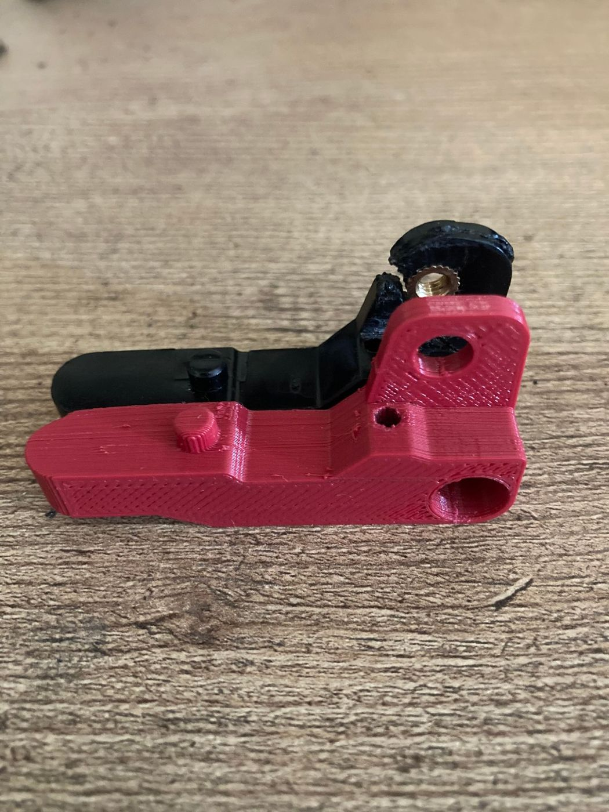
Prototipo impreso en 3D (rojo) junto a la pieza original (negra)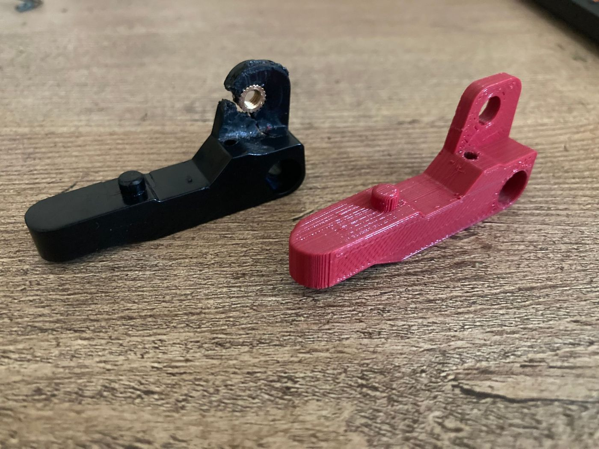
Prototipo impreso en 3D (rojo) junto a la pieza original (negra)Animación 3D de engranajes
Del prototipo a la pieza en metal
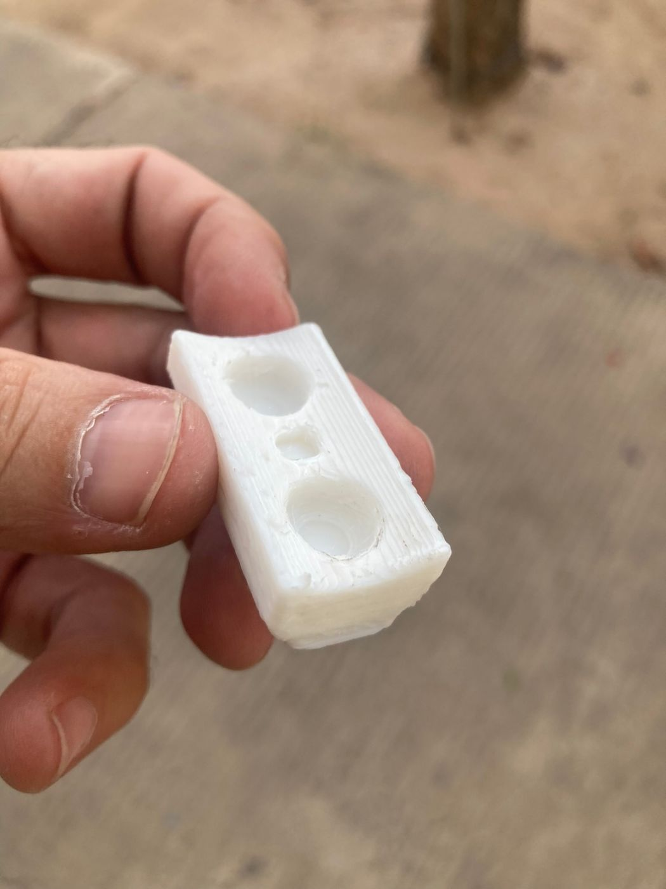
Prototipo impreso en 3D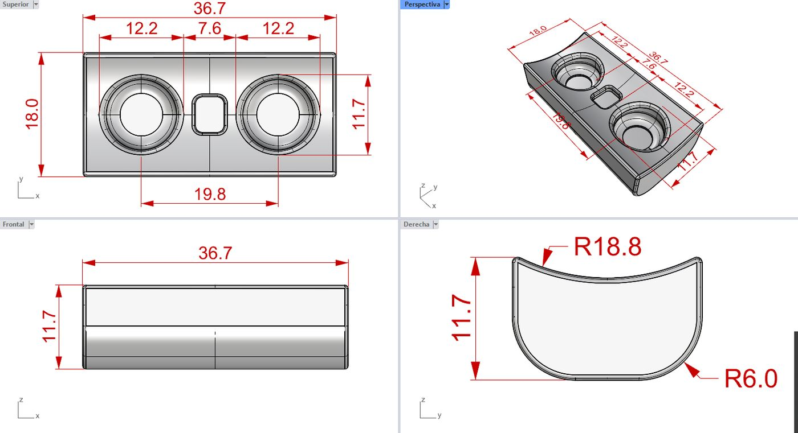
Plano de la pieza en Rhino, con cotasPieza en metal junto a su prototipo impreso en 3D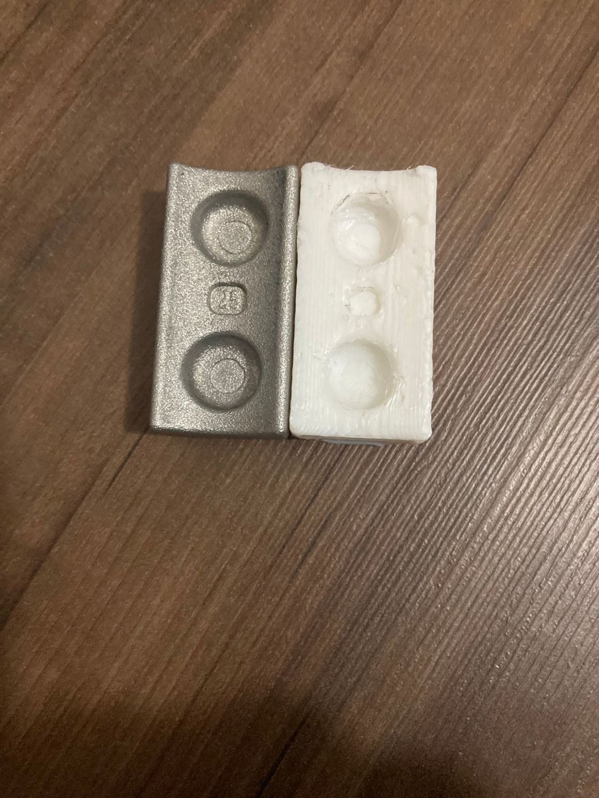
Pieza en metal junto a su prototipo impreso en 3DFresado CNC
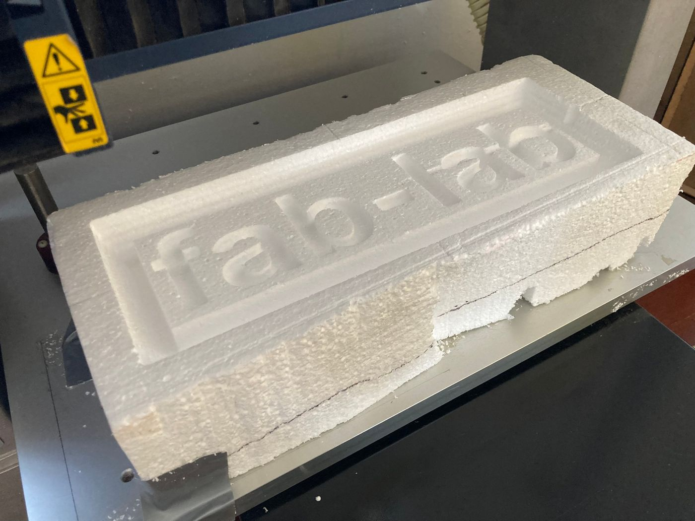
Fresado CNC en poliestireno · fab-labFresado CNC de un jarrón en poliestirenoFresado CNC con Roland MDX-540
Fresado CNC en detalle
Fresado CNC de un jarrón en poliestireno